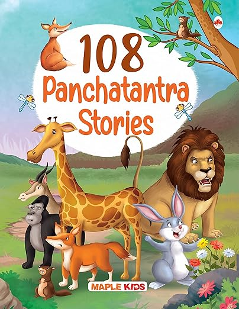

从前，有一只狮子为了午餐抓了很多动物。于是别的动物去见了狮子。她们说：“先生，我们每天送一只动物给您做午餐”。狮子答应了。有一次，轮到兔子了。路上，它看到了一口井。它往井里看。它在水中看到了自己的倒影。突然，它有一个好主意。狮子看到兔子那么小。它感到很生气。兔子说：“先生，派出了五只兔子。但是别的狮子吃了四个。它饶了我，让我来告诉你这件事”。它让兔子带它去别的狮子。兔子把狮子带到了井边。兔子说另一只狮子住在井里。狮子朝井里看。它看到了自己的倒影。狮子以为它是另外一只狮子。狮子跳进井里去和它打架。狮子丧命了。从此，所有动物都幸福地生活。
寓意：保持冷静有助于做出明智的决定。
从前有一只豺。它在找吃的。它到了附近的镇。但是它被狗赶走了。它害怕地跑了。它进了一个洗衣工的家。在那里，它掉进了一个蓝色染料桶。然后它爬了出来。然后它跑回了森林。动物因为它的颜色而害怕它。它注意到动物的害怕，于是想出了一个计划。他告诉动物，它是神派来做他们的国王的。动物接受了它做国王。别的动物伺候它。它享受着它的生活。但是有一天，它听到一群豺在嚎叫。它因此很兴奋，也开始嚎叫。其他动物意识到他们被骗了。他们立即把它从丛林赶走了。
寓意：真相是无法躲在面具后面的。
从前有一棵树。树上住着一对乌鸦和一条眼镜蛇。每次乌鸦下蛋，眼镜蛇都会把它吃掉。他们很绝望，想找一个解决办法。于是，他们去找他们的朋友，一只豺，商量。豺建议他们偷女王的一颗宝石。然后把宝石放在眼镜蛇的洞里。有一次，乌鸦看见女王在池塘里洗澡。那时候，她的项链放在一块石头上。乌鸦把它捡起来了。乌鸦飞了过去，把它丢进眼镜蛇的洞里。士兵追赶乌鸦。他们看见了乌鸦做的事。他们把长矛伸进洞里。眼镜蛇害怕了，然后从洞里出来了。看见武器，它逃走了。它再也没有回来。士兵拿走了项链。乌鸦从此幸福地生活下去。
寓意：希望最好的结果，永不放弃。
一只老鹤抓不到鱼。所以它想到了一个计划。它坐在湖边大哭起来。一只螃蟹问它原因。鹤说它听人说未来很多年都不会下雨。螃蟹很担心。鹤建议它把所有的鱼带到附近的湖里。螃蟹告诉它的朋友们。他们很高兴。但是它吧他们带到另一个地方，然后吃了他们。轮到螃蟹的时候，它爬到了鹤的背上。路上，它看到了鱼骨堆。它明白了鹤的计划。螃蟹咬了鹤的脖子。鹤痛苦地飞走了。螃蟹回到了湖里。
寓意：保持镇定很重要。
从前有一只豺狼。它离开了森林，去寻找食物。它到了一片空地。它很累。于是它睡着了。但是它听到轰隆声时，受惊了。它吓坏了，然后跑走了。但它停下来，想着自己可能是白害怕了。它决定调查声音的来源。它一边走，一边看到一个战鼓躺在藤蔓下。它意识到藤蔓摩擦战鼓，发出了声音。然后它走近了战鼓。它像，鼓里有没有食物。它做了一个洞，但发现里面是空的。它离开了那个地方，然后继续寻找食物。它用一个想法安慰自己：“至少我克服了我的害怕。”
寓意：勇敢的人不是没有恐惧的人，而是战胜恐惧的人。
从前有一个圣。他不相信任何人。他总是随身带着他的钱。有一次，一个小偷注意到了他的包。它以为里面可能有贵重物品。他打算偷走它。他走到圣人前面，告诉他自己是一个孤儿。并且想要成为他的弟子。他让圣人相信他是一个诚实的人。圣人同意了。有一次，他们在森林中旅行。他们遇到了一条溪流。圣人决定下水泡一泡。他让徒弟看好他的东西。圣人忙着看山羊在河的另一端打架。那时候，小偷带着包逃走了。圣人回来了。圣人发现那个人和他的包不见了。它哭着说，自己真是傻，居然相信了一个陌生人。
寓意：粗心的态度会导致毁灭。
从前，有一头狮子。它住在丛林里，和三个助手：一只豹，一只胡狼，一只乌鸦。有一天，他们看到了一头迷路的骆驼。狮子邀请骆驼在他的王国里做客停留。有一次，狮子受伤了，不能打猎。他命令他的助手给他带来食物。但是他们没有找到任何食物。他们建议吃骆驼。狮子不同意。他们说服狮子， 如果骆驼自己愿意被吃，狮子就不会拒绝。当骆驼到的时候，狡猾的助手们让狮子把它们当作食物吃掉。看到这个，骆驼也自愿被吃。一听到这个，他们就扑向他。
寓意：被邪恶仆人包围的智慧主人也不值得信任。
从前，有一对野鸡住在海边的一棵树上。有一次，母野鸡让公野鸡去找一个更安全的地方让她下蛋。她担心海水会把她的巢冲走。公野鸡告诉她，海没有能力伤害他们。她下好了蛋，然后他们就去找食物。海决定展示它的力量。海掀起了一个巨大的海浪，把蛋冲走了。鸟儿回来了，发现蛋不见了。他们呼求上帝，他承诺帮助他们。上帝告诉海洋，把蛋还给他们，否则他就会让海洋干涸。海吓得把蛋扔回了岸边。
寓意：对敌人的了解会产生更好的结果。
一个乌龟和两个天鹅曾今是最要好的朋友。他们每天都在湖边见面。有一年雨下得很少，天鹅很担心。天鹅谈起了山另一边的另一个湖。他们决定去那里，并邀请乌龟一起同行。他告诉他们自己不会飞，但有一个好主意。他让他们用鸟嘴叼住一根棍子。而他自己则咬住棍子的中间。天鹅们同意了，但提醒他在飞行时不要张嘴。他们飞行时，飞过了一座城市。人们看到这一幕都很兴奋。乌龟想说点什么。他张开了嘴，结果掉了下来，受了很重的伤。
寓意：一定要倾听智者的忠告。
从前，湖里住着三条大鱼。他们当中两个努力工作。但第三条鱼更相信命运的安排。一个傍晚，两个渔夫路过湖边。他们看到湖里满是好鱼。他们决定第二天再来湖边捉鱼。听到这个，勤劳的鱼说他们有危险。并决定游到湖的另一边躲起来。但是第三条鱼笑了。他说他们就住在那里，从来没有人捉过他们。他决定不去。第二天早上，那两个渔夫来了，撒下了他们的网。决定不走的第三条鱼和其他鱼一起被网住了。
寓意：相信命运只会走向毁灭。
从前有一个守财奴，拥有很多金子。他没有花掉它，而是把它藏在花园里，每天数一遍。有一次，一个小偷注意到了那堆金子。他把那个洞挖开，把金子偷走了。第二天早上，守财奴找不到他的金子，吓得不行。他喊道他的金子被偷了。听到他的哭声，他的邻居赶紧跑到花园里。“你为什么不把它放在自己家里呢？在那里你就可以花掉它”一个邻居问他。"我不喜欢花我的钱",他生气地回答。邻居往洞里扔了一块石头，说："那你的金子不比这块石头更好"。
寓意：不用的财富等于不存在。
从前，有一个森林被山和湖环绕。在那片森林里，住着一只美丽的母鹿。她一只眼睛是失明的。尽管有这个残疾，她快乐，勇敢，而且警觉。她在高高的悬崖上吃草。所有的动物都是她的朋友。她是聪明的。她从猎人那里救了很多动物。有一天，她在悬崖上吃草。一个猎人上了一艘船，朝她吃草的悬崖走去。虽然她忙着吃草，但她灵敏的耳朵让她察觉到了危险。她及时回头，看到猎人正用弓箭瞄准。箭一射出，母鹿就跑进森林，救了她的命。
寓意：有备无患。
一只兔子总是吹嘘自己的速度。有一天，他胆敢挑战别人和他比赛。一只乌龟向他发起挑战。看到这一幕，森林里的所有动物都嘲笑他。但是这没有让他泄气。第二天，所有的动物聚集在起点。比赛一开始，兔子就跑了，很快就把乌龟远远甩在后面。在路上，他看到了一片包菜田，然后吃了点东西。吃完后，他感觉困了，就打了个小盹。但是乌龟没有放弃。他慢慢的爬向终点。突然，兔子醒了，发现乌龟已经越过了终点。
寓意：坚持不懈就能获胜。
有一天，一个狡猾的狐狸遇到了一只鹳。狐狸假装是他的朋友，邀请他来吃晚饭。狐狸把汤盛在了两个浅盘子里。由于鹳的嘴巴又窄又长，他根本喝不到汤。他饿着坐在那里，而狐狸却在大口的喝汤。鹳失望地离开了。他想着要给狐狸一个教训。有一天，鹳邀请了狐狸。这次他把晚餐装在了瓶口很窄的高罐子里。鹳能够够到食物，但狐狸只能舔罐子的外面。他没办法把脸伸进罐子里。狐狸意识到了他的错误，然后离开了。
寓意：你希望别人怎么对你，你就怎么对别人。
一对麻雀住在树上。有一天，一头被热惹烦的野大象来了。他开始折断麻雀住巢的树枝。结果，麻雀的蛋被毁了。看到麻雀伤心，啄木鸟带着他们去找他的朋友，苍蝇。他把整个故事告诉了他。苍蝇建议去找青蛙帮忙。青蛙听完故事后，告诉苍蝇进到他的耳朵里去惹他。然后啄木鸟和青蛙应该把他往丛林里的沼泽追过去。他们同意了这个计划。大象被追进沼泽里，然后摔倒受伤了。他在也没有回到那片丛林了。
寓意：在麻烦的时候，友谊是最好的解药。
在一个非常寒冷和结霜的晚上，一群猴子来树下避难。他们收集了干也和树枝，并在上面放上红色的莓子，以为那是红色的火炭，可以生火。一只看到这一幕的麻雀告诉猴子，那些是红色的莓子，不是火炭。但是猴子没有理会麻雀。他们开始对着堆吹气，想要生火。麻雀又尝试了一次，但是猴子生气了。他们问她，为什么她要多管闲事，插手他们的事情。但是麻雀还是继续劝他们。猴子们生气了，扑向了她。她受了重伤，然后飞走了。
寓意：有时候，沉默比给建议更好。
曾经，一位国王有一只宠物猴子。这只猴子充当他的仆人。国王的大臣不喜欢国王太重视那只猴子。他们尝试与他谈这件事。但是国王没有听他们的话。一天下午，国王在午睡。他告诉猴子不要让任何人来打扰他。猴子突然注意到国王的床上有一只苍蝇。他尝试赶走它。但它总是回来。他决定教训苍蝇。他拿起国王的匕首，打了苍蝇。它飞走了，结果他伤害了国王。猴子不知道哪里出错了。
寓意：相信傻瓜的人注定要完蛋。
两个朋友，一个叫好心的和一个叫坏坏心的，挣了钱。他们把钱埋起来以保证安全。有一天晚上，坏心偷了钱。他责怪好心偷了钱。他们从国王那里寻求正义。坏心说，森林王是证人，证明好心偷了钱。国王决定在第二天解决案件。坏心告诉他的爸爸躲在大树附近。他告诉他，当被问谁偷了钱的时候，喊好心的名字。两个朋友和国王去了那个坑。他们问谁偷了钱。一个声音回答”好心“。好心知道有什么事情不对劲。坏心的爸爸被从躲藏中拉出来。国王惩罚了他的儿子。
寓意：有些友谊带来的伤害比好处更多。
猫头鹰和天鹅是最好的朋友。有一天，天鹅邀请猫头鹰做他的客人几天。他们享受一起的时光。当猫头鹰要离开的时候，他邀请天鹅去他的家。几个月后，天鹅拜访了猫头鹰。猫头鹰很兴奋，他们一起度过了美好的时光。有一天，当他们坐在猫头鹰的家外面是，他们看到有些旅行者在一棵树旁扎营了。突然，猫头鹰开始咕咕叫。那些旅行者认为有不幸会降临到他们身上。于是，他们决定杀了猫头鹰。无辜的天鹅不知道发生了什么。其中一个人拿起弓箭，瞄准了猫头鹰。可是他没有射中目标，反而射中了天鹅。可怜的天鹅受伤了。他离开了猫头鹰的家，再也没有回来。
寓意：小心的选择你的朋友。
有一个商人，有一次带着他的铁秤去找典当商，请他抵押。后来，他回来还钱了。贪婪的典当商告诉他秤被老鼠吃了。商人决定给他一个教训。商人说他想要一些帮助。他请求典当商派他的儿子来。他把男孩带走，藏在一个山洞里。他告诉父亲，男孩被一只鹰带走了。典当商威胁要把他带到国王的法庭。商人回答：“是的。我会告诉他，如果老鼠能吃掉铁秤， 为什么鹰不能带走小男孩？”。典当商道了歉。他还了铁秤，并取回了他的儿子。
寓意：智慧是人类最好的朋友。
有一次，一只臭虫住在宫殿里一条白色麻布床单的褶皱里。有一天，一只跳蚤来到了卧室。臭虫问跳蚤为什么他会来这里。跳蚤请求让他留下来，并且尝一尝皇族的血。臭虫想了一会儿，然后同意了。他建议跳蚤等国王睡着了。就在这时，国王走进了他的卧室。跳蚤决定不再等。他直接飞起来咬了国王一口。这激怒了国王。他告诉仆人发生了什么。跳蚤飞走了。仆人抓住了躲在角落里的臭虫，然后把他扔出了宫殿。
寓意：只要有正当的理由，但是和错误的同伴在一起，也会是致命的。
一个织工和一个木匠是朋友。有一天，织工爱上了一位美丽的公主。他告诉木匠他想要娶那位公主。木匠造了一只巨大的机械鸟。然后他教织工如何操作杠杆。他让他飞到公主的闺房外面，表达他想娶她的愿望。公主很印象深刻。她同意嫁给他，因为她认为他是某种神明。几年后，王国被攻击了。
寓意：